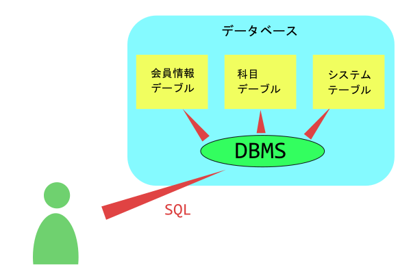
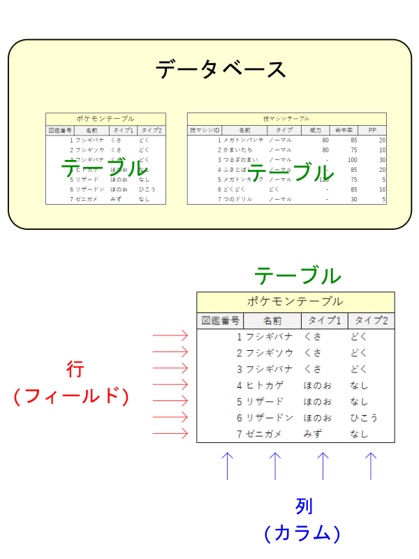
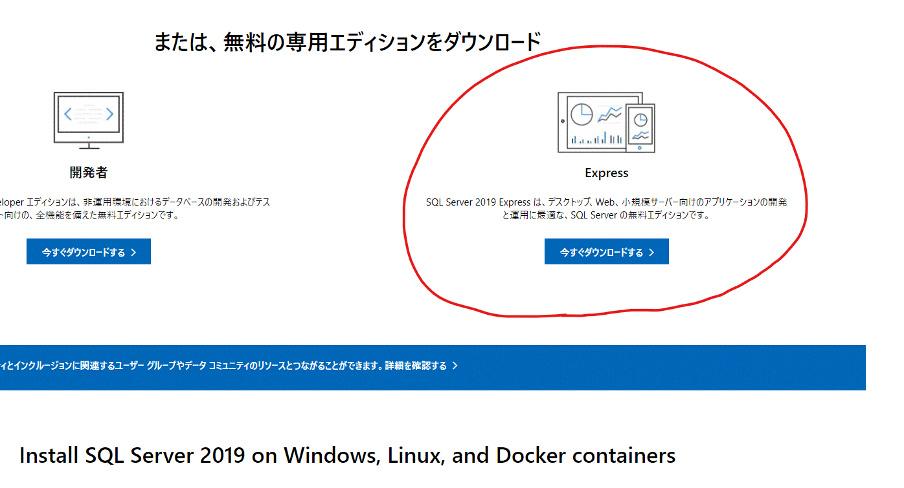
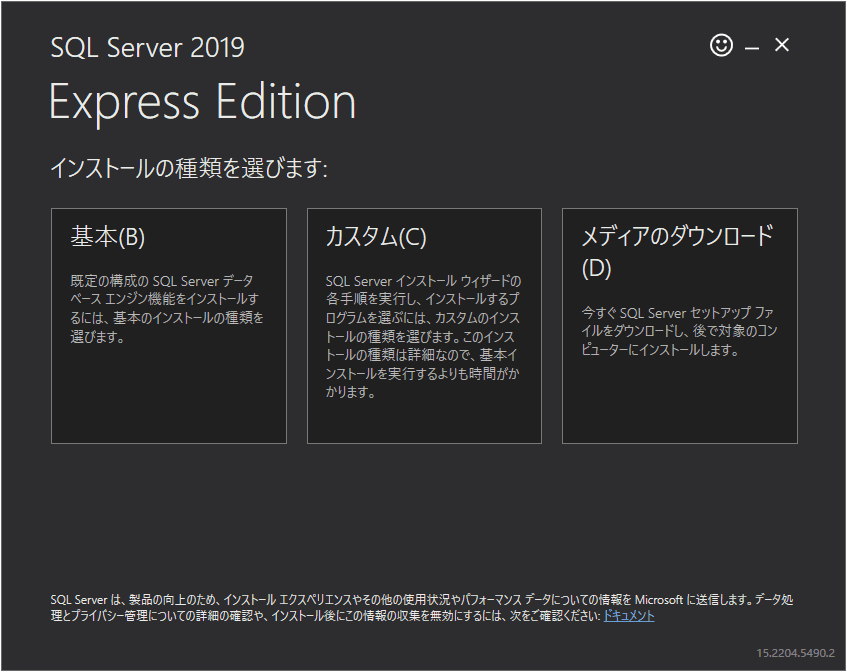
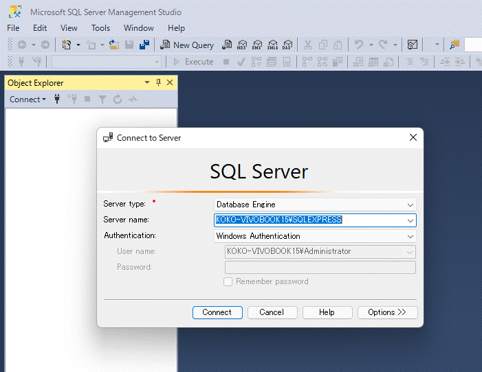
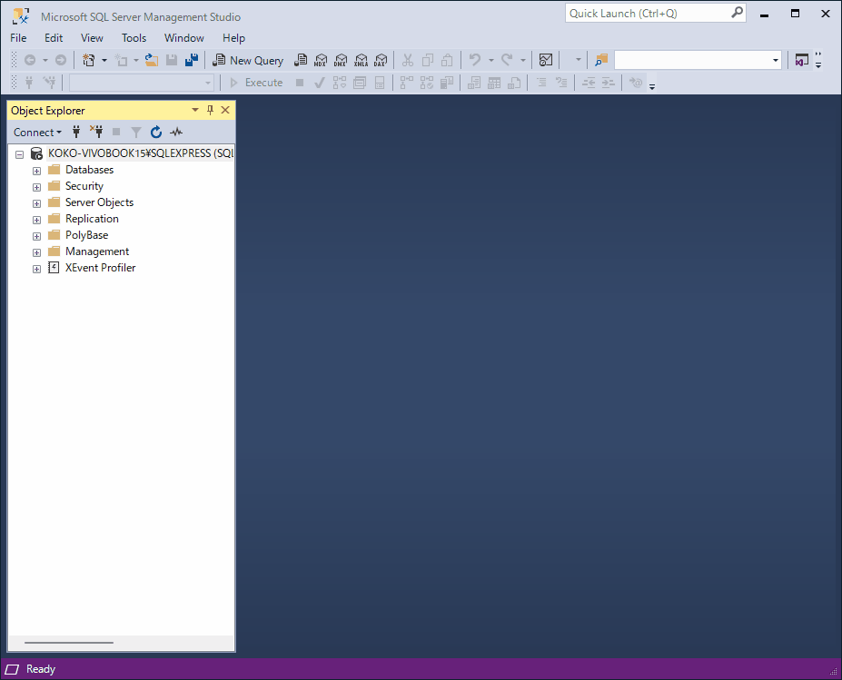

データベース
データベースとは字面通りデータの保存庫で、データの保存・管理を目的とした技術を言います。
狭義では実際に集めたデータを保存する記憶領域を指しますが、広義では記憶領域とそれを操作するプログラム(RDBMS)を総称してデータベースと呼びます。
また、データベースはデータの整理方法によって複数の種類に分けられます。
代表的なものに以下のものがあります。
- 関係DB
- 構造型DB
- 階層型DB
- OODB
- XML DB
一般的にデータベースというと、関係DB(RDB)を指します。
DB-ENGINES社の調査によると、70%以上のシステムで関係DBが採用されています。
関係DBはエクセルのように行と列によってデータを管理します。
ここでは、主に関係DBについて取り扱います。
SQL
SQLとは「データベースを操作するためのクエリ言語です。
SQLとは「Structed Query Language(構造化問合せ言語)」の略といわれることもありますが、標準規格であるIEEEではこれが否定されていて、SQLは何かの略称ではないとされています。
ユーザが、ないしはプログラムが直接データベースを操作することはせずに、RDBMSにSQLを発行してデータベースを操作してもらいます。

RDBMS
「Relational DataBase Management System」の略で、実際にデータベースを操作してくれるプログラムを指します。
データベース操作に関しては一般にユーザが直接データベースを操作することはせずに、ユーザがRDBMSへSQLと言われる命令文を出してそれを受け取ったRDBMSが代わりにデータベースを操作します。
RDBMSには以下の種類があります。
- MySQL
- MariaDB
- PostgreSQL
- SQLite
- SQL Server
ほとんどのRDBMSはANSIやISOによって標準化されていため処理は同じですが、種類によっては少し記述方法が異なる場合があります。
関係DBの構造
最初に関係DBの構造を理解しましょう♪
データベースは複数のテーブルからなります。
また、テーブルは表形式となっており、横のラインを行(フィールド)、縦のラインを列(カラム)と呼びます。

データベースはひとつのシステムにつき原則ひとつだけ作成して、その下に複数のテーブルを作成します。
データベース環境構築
これから、実際にデータベースを操作しますが、単に説明を読みだけではなく、実際にデータベースを自分で操作してみることをオススメします。
そのほうが理解しやすいですから、、、
ということで、DBMSをインストールしましょう♪
SQL Serverのダウンロード
DBMSの種類はなんでもOK!ですが、ここでは「SQL Server」を紹介します。
前回までは「MySQL」を説明に使用していましたが、「MySQL」と「MariaDB」は僕が開発環境でバリバリ稼働させているという理由から、今回は「SQL Server」とします。
それ以外の理由として、GUIで簡単に操作できるからという理由も挙げておきます。
上のリンクからインストーラをダウンロードして下さい。
「Express」を選択して下さい。

ダウンロードが完了したら、そのままインストーラを起動して下さい。
SQL Serverのインストール
インストーラを実行するとインストール内容を選択する画面が表示されます。
今回は特にカスタマイズせず、全部デフォルトに設定します。

SSMSのインストール
次に「SQL Server」をGUIで簡単に操作するためのIDE(統合開発環境)を整えましょう♪
「SSMS」と呼ばれるプログラムを使用します。
以下のリンクからインストラクターインストーラをダウンロードして下さい。
「SQL Server Management Studio (SSMS) **.**.** の無料ダウンロード」と書いてあるところからダウンロードして下さい。
ダウンロードが完了したらそのまま起動してインストールを実行してください。
インストールが完了したらパソコンを再起動するようにお願いされます。
斜に構えずに再起動してください。
再起動が終わったら、SSMSを起動してください。
スタートメニューで「SSMS」と検索したら表示されます。
SSMSを起動したら以下の画面が表示されると思います。

「SQL Server」のログインオプションに関しては「SQL Server」独自のものですので、気にしなくてOK!です。
ログインに成功したら、早速SQLを実行しましょう♪
左上に表示されている「New Query」をクリックして、表示されたエディタに以下のSQLを貼り付けてください。
SELECT
NAME,
DATABASE_ID,
CREATE_DATE
FROM
SYS.DATABASES;
「Execute」ボタンをクリックするか、「F5」キーを押すことでSQLを実行します。

今回はデフォルトで登録されているデータベース一覧が表示しました。
表示された内容は気にしなくてOK!です。
ここでは、SQLの実行方法だけ理解して下さい。
左側に表示されている「Object Explorer」からは簡単にデータベース・テーブル・ストアドプロシージャなどを表示・変更することが可能です。
「pokemon」データベースの「my_pokemon」テーブルの列を確認する場合には、「Databases > pokemon > my_pokemon > 列」から確認することが可能です。